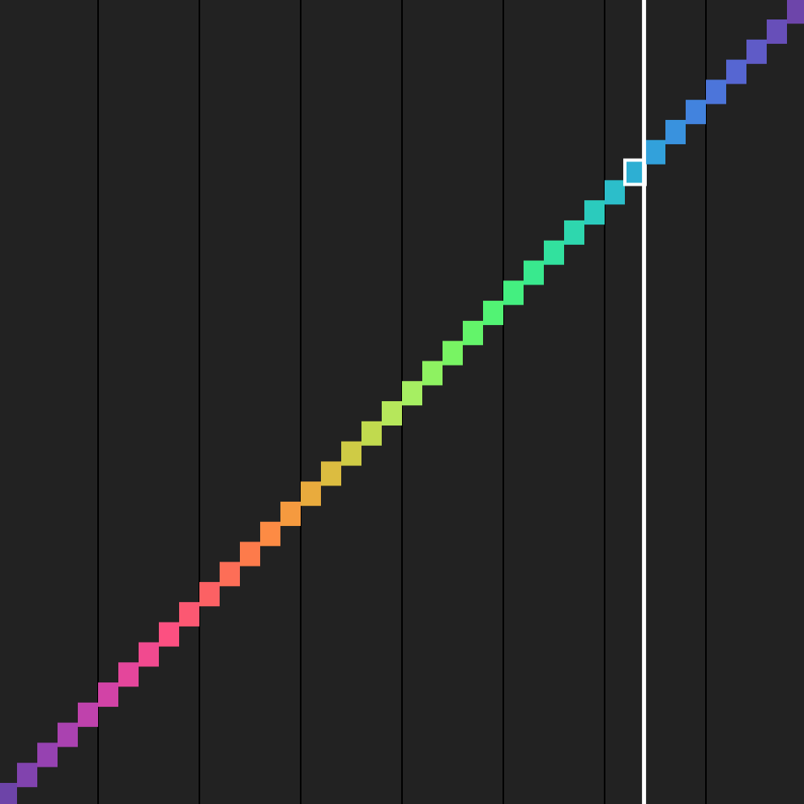
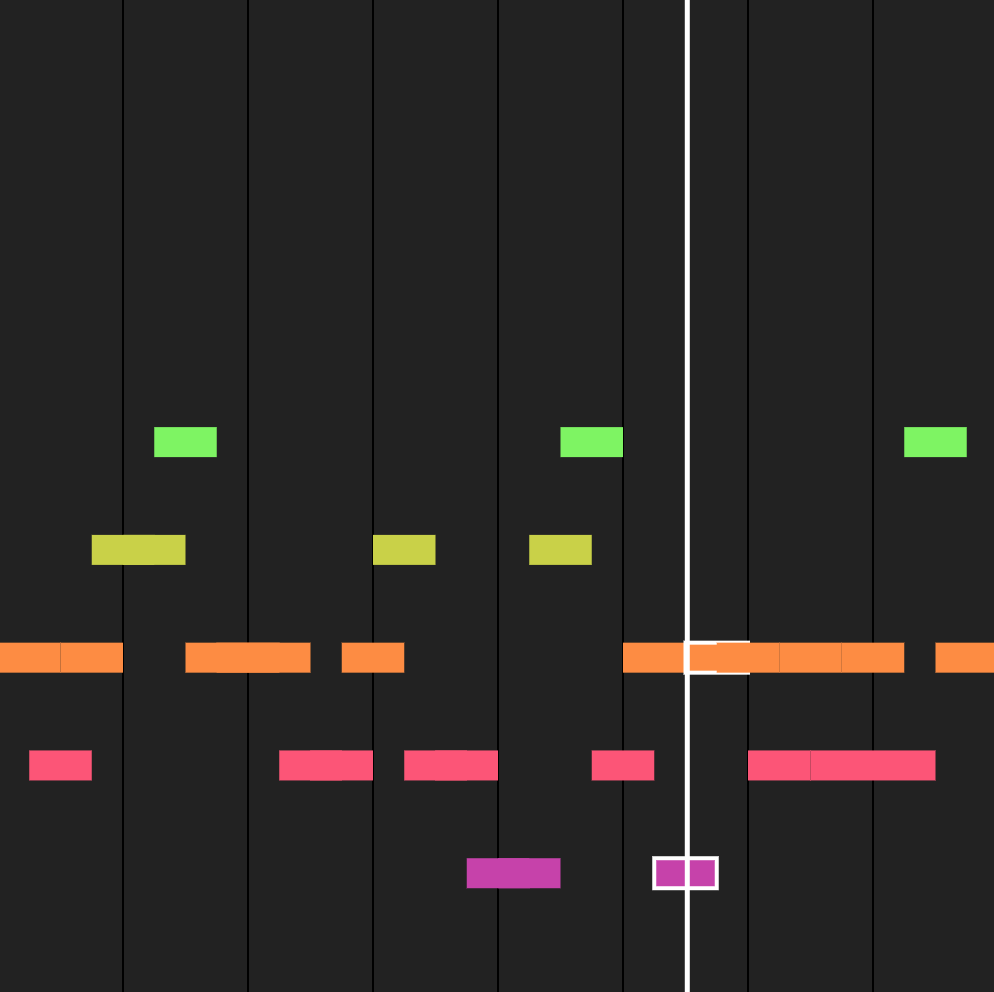
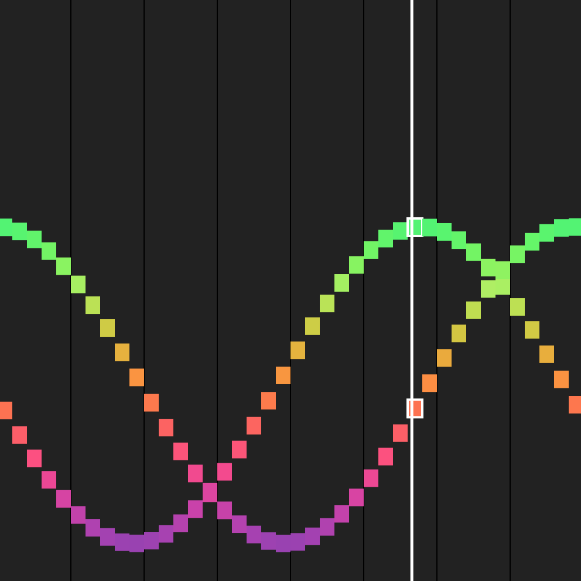
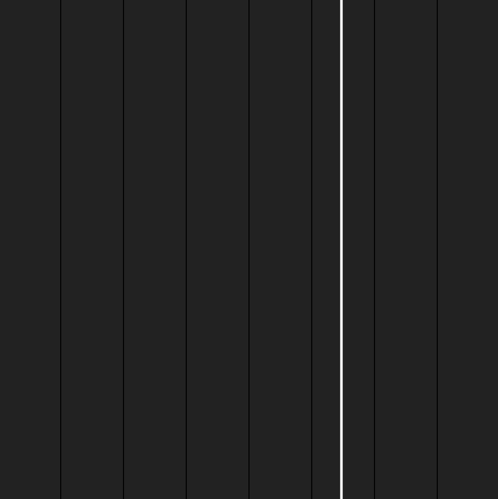

<!doctype>
<html>
<head>
	<title>The Joy of Music</title>
	<link rel="stylesheet" href="../demo.css">
	<link rel="stylesheet" href="../../dist/joy.css">
</head>
<body>
	<div id="content">
		<div id="container">
			<div id="player"></div>
			<div id="editor"></div>
		</div>
		<div id="footer">
			<div id="more-shtuff">
			<span style="font-size:1.9em;">more generative music &rarr;</span>
			<br>
			<a href="../nonlinear/?model=waves">see nonlinear demo</a>
			|
			<a href="../">back to homepage</a>
			</div>
			<div id="demos">
				<a href="?play=staircase">
					
					<span>staircase</span>
				</a>
				<a href="?play=random">
					
					<span>random</span>
				</a>
				<a href="?play=waves">
					
					<span>waves</span>
				</a>
				<a href="?play=fractal">
					
					<span>fractal</span>
				</a>
				<a href="?">
					
					<span>blank</span>
				</a>
			</div>
		</div>
	</div>
</body>
</html>

<!--script src="../../dist/joy.min.js"></script-->
<script src="../../src/lib/-helpers.js"></script>
<script src="../../src/lib/watch.min.js"></script>
<script src="../../src/lib/lz-string.min.js"></script>

<script src="../../src/core/Joy.js"></script>
<script src="../../src/core/joy-ui.js"></script>
<script src="../../src/core/joy-modal.js"></script>
<script src="../../src/core/joy-actors-ui.js"></script>
<script src="../../src/core/joy-actors-actions.js"></script>
<script src="../../src/core/joy-actors-instructions.js"></script>
<script src="../../src/core/joy-actors-vars.js"></script>
<script src="../../src/core/joy-actors-math.js"></script>
<script src="../../src/core/joy-actors-random.js"></script>

<style>
#player{
	cursor: pointer;
}
#player #overlay{
	/*display: none;*/
	width:200px; height:200px;
	position: absolute;
	top:150px; left:150px;
	background: url(music_icons.png);
	background-size: auto 100%;
    opacity: 0;
    transition: opacity 0.1s ease-in-out;
}
#player #overlay[playing=no]{
	background-position: 200px 0;
}
#player:hover #overlay{
	opacity: 0.9;
}
#editor{
	font-size: 20px;
	line-height: 1.7em;
}
#music_sheet{
	position: absolute;
	margin: auto;
	top:0; left:0; right:0; bottom:0;
	width:500px; height:500px;
}
</style>

<script src="Tone.min.js"></script>
<script src="Music.js"></script>
<script src="music-demo.js"></script>

<!-- yes i'm importing three d3 modules JUST so i can have nice color interpolation, so sue me -->
<script src="d3-color.v1.min.js"></script>
<script src="d3-interpolate.v1.min.js"></script>
<script src="d3-scale.v1.min.js"></script>
